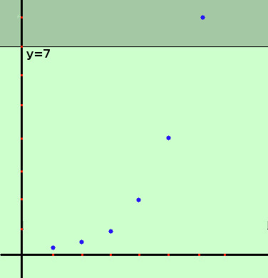
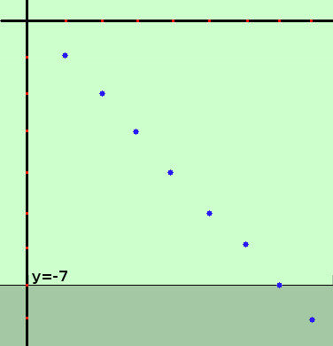
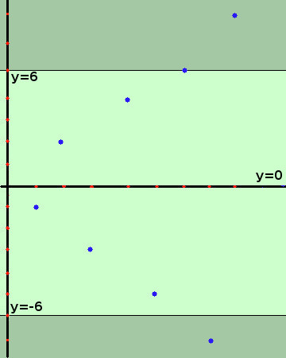

tipi di successioni a limite infinito
Distinguiamo i casi
- Successione crescente a limite infinito

Esempio: consideriamo
¼, ½, 1, 2, 4, 8, ..... 2n-3, ....
Essa tende a +∞: i suoi termini si avvicinano al valore +∞ crescendo
Da un certo momento in poi tutti i termini della successione sono contenuti nella striscia colorata (intorno di +∞ che posso spingere verso l'alto quanto voglio: qui ho preso il valore +7 come bordo della striscia), quindi posso scrivere
limk→∞ 2k-3 = +∞
- Successione decrescente a limite infinito

Esempio: consideriamo la successione semplicissima
-1, -2, -3, -4, -5, ...... -n, .....
Essa tende al valore -∞: i suoi termini si avvicinano al valore -∞ decrescendo
Da un certo momento in poi tutti i termini della successione sono contenuti nella striscia colorata (intorno di -∞ che posso spostare in basso quanto voglio: qui ho preso il valore -7 come bordo della striscia), quindi posso scrivere
limk→∞ -k = -∞
- Successione oscillante tendente ad infinito

Esempio: prendiamo la successione
-1, +2, -3, +4, -5, +6, -7, +8, ..... n·(-1)n, ....
Essa tende al valore ∞ (senza segno):
i suoi termini si avvicinano al valore ∞ sia verso l'alto che verso il basso (oscillando)
Da un certo momento in poi tutti i termini della successione sono contenuti nella striscia colorata (intorno completo di ∞ che posso spostare verso infinito quanto voglio), quindi posso scrivere
limk→∞k·(-1)k = ∞
Approfondimento: perche' l'intorno di infinito (senza segno) e' fatto da due strisce, una verso l'alto ed una verso il basso
|